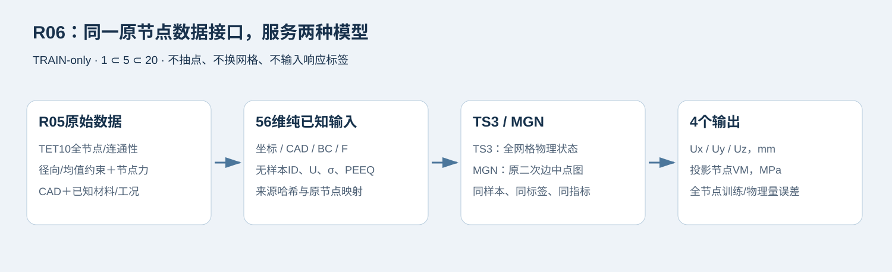

01
展示说明
切换工况可查看对应的物理场景、受力来源与可能响应；几何、已知载荷和标签分别展示。
切换工况可查看对应的物理场景、受力来源与可能响应；几何、已知载荷和标签分别展示。
未发现将响应或样本编号作为输入；预处理仅使用训练子集。应力标签是节点投影，非原积分点预测。
审阅者：Codex（AI） · 基于已保存结果与导出核验记录
核对冻结的嵌套TRAIN子集、原节点映射与输入/输出定义。56维输入均来自已知几何、边界、节点力及材料工况，没有真值响应或样本编号；归一化只由各自TRAIN子集得到。VM标签是原四GP单元最大值经参考体积加权的节点投影，不能表述为直接预测原GP场。该接口完成不构成验证/测试集性能结论。新增逐例工况说明来自冻结载荷与相位、转速、净压及厚度偏压参数。场景是理想化解释，可能响应是机理预期，不能据此判定失稳、损伤、疲劳或实际故障；具体几何和约束同样影响场响应。
两模型分别使用1、5、20条嵌套TRAIN样本，各完成2000轮整组梯度累积。六组累计训练6.48小时，暂停等待时间不计入训练耗时。以下为最佳训练目标checkpoint的实测误差，全部原节点参与评价。
| 模型 | TRAIN条数 | 位移L2 均值 / 最差 | 节点VM L2 均值 / 最差 | 训练分钟 |
|---|---|---|---|---|
| TS3 | 1 | 0.851% / 0.851% | 4.490% / 4.490% | 5.76 |
| TS3 | 5 | 3.850% / 9.510% | 13.021% / 15.614% | 29.43 |
| TS3 | 20 | 14.875% / 51.994% | 20.883% / 35.960% | 120.09 |
| MGN | 1 | 0.437% / 0.437% | 1.851% / 1.851% | 7.43 |
| MGN | 5 | 1.035% / 1.376% | 4.455% / 4.990% | 45.03 |
| MGN | 20 | 2.117% / 4.089% | 11.238% / 15.898% | 180.96 |
本次配置和训练预算下，MGN在三档样本数上的平均位移与节点VM误差均低于TS3；20条档仍保留表中所示误差。结论限于这些训练样本、当前配置与预算，未评估validation/test泛化。节点VM为明确的GP场投影标签；网络输出未强制应力非负，逐例CSV保留原始预测指标。实验完成不附加误差通过线。
从R05的800条TRAIN中冻结20条不同几何，构成1⊂5⊂20。原validation/test不用于这些拟合；展示二十例中的8条validation/test也未被混入训练。
全部原TET10节点与二次边中点图，未抽点或换网格。56维坐标/CAD/约束/载荷/已知材料输入；无样本ID、后端、残差、真值U/应力/PEEQ输入。输出为Ux/Uy/Uz与明确的节点VM投影。
VM标签：单元四个原GP的最大VM，经参考体积加权平均至原节点，与R05二十图的显示定义一致；不是直接GP应力预测。输入标准化及U/VM输出尺度仅从各自训练子集计算。
| 编号 | 样本 | 原节点 | 有向边 | 档位 |
|---|---|---|---|---|
| 1 | normal_rodv2_0150__gas_inertia_30deg | 33555 | 112736 | 1/5/20 |
| 2 | normal_rodv2_0161__compression_skew | 36558 | 123124 | 5/20 |
| 3 | normal_rodv2_0170__gas_inertia_30deg | 47670 | 161076 | 5/20 |
| 4 | extreme_rodv2_0130__combined_bending | 30155 | 101364 | 5/20 |
| 5 | extreme_rodv2_0060__overspeed | 61011 | 206364 | 5/20 |
| 6 | extreme_rodv2_0155__rated_firing_compression | 35273 | 118844 | 20 |
| 7 | normal_rodv2_0081__tension | 36063 | 121424 | 20 |
| 8 | extreme_rodv2_0142__overspeed | 35303 | 118836 | 20 |
| 9 | extreme_rodv2_0041__combined_bending | 37691 | 127120 | 20 |
| 10 | extreme_supp2_rodv2_0053__inertial_tension_350deg_8000rpm | 36061 | 121368 | 20 |
| 11 | normal_rodv2_0117__compression_skew | 31007 | 104300 | 20 |
| 12 | extreme_rodv2_0061__overpressure | 30539 | 102604 | 20 |
| 13 | normal_rodv2_0059__inertia_tdc | 39891 | 134512 | 20 |
| 14 | normal_rodv2_0112__compression | 57793 | 195432 | 20 |
| 15 | normal_rodv2_0033__tension_skew | 37663 | 126872 | 20 |
| 16 | normal_rodv2_0067__inertia_tdc | 64872 | 219596 | 20 |
| 17 | normal_rodv2_0063__tension_skew | 50838 | 171808 | 20 |
| 18 | normal_rodv2_0075__tension | 37489 | 126324 | 20 |
| 19 | normal_rodv2_0129__compression_skew | 67767 | 229488 | 20 |
| 20 | normal_rodv2_0043__inertia_tdc | 52112 | 176056 | 20 |
两个模型的数据加载与输入输出定义
两个模型的数据加载与输入输出定义
核对坐标、连通性、边界特征、标签和归一化
尚未录入结果。首条交付后，链接固定保留在本页。
尚未录入；后续记录与每日更新一同追加。
正在读取记录…
